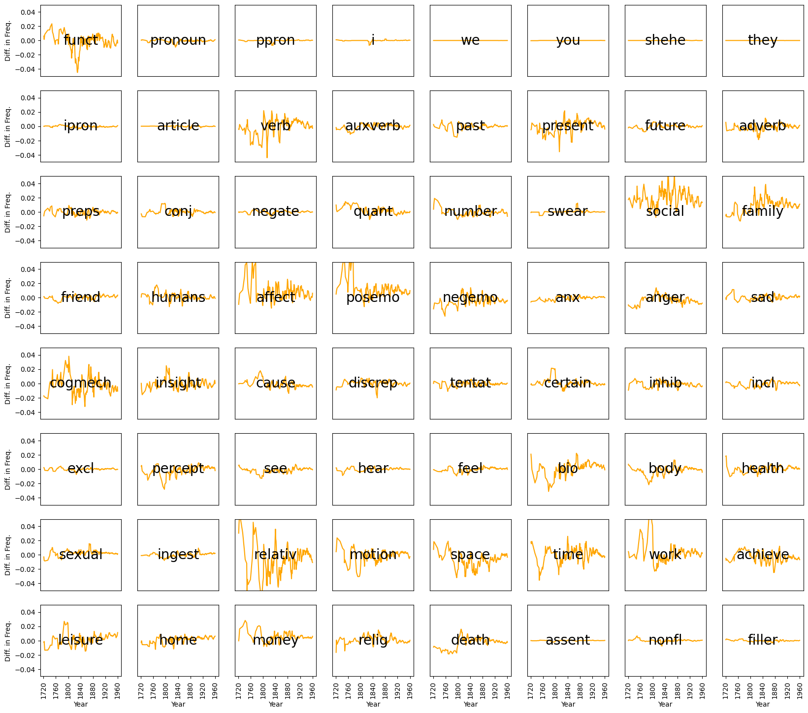

Speculative Fiction: A Dark Mirror
Grace Shao
University of Chicago
graceshaoy2@uchicago.edu
Research Question and Background
As a fundamental pillar of culture, stories are a reflection of culture, a product of time and place. Horror stories, then, are a reflection of a societal fears, and the boundaries they draw between good and evil, health and perversity, us and them are a reflection of a society’s social state.
Current popular science fiction stories center around fears of artificial intelligence and the boundaries between human and robot. This fear is rooted in the larger tradition of horror, science fiction, and Gothic stories of piecing together a body from deviance (race, class, gender, sexuality, or technology) and is heavily tied to the production of knowledge.
Similar to how developments in artificial intelligence encourage creative writers to engage with social, moral, and future implications of technology, Mary Shelley’s classic Frankenstein was written in context of recent scientific developments. Luigi Galvani had found that frog legs twitched with electric shocks, and Giovanni Aldini found that a recently hanged man’s muscles twitched with an electric shock [publicdomain]. Additionally, the Englightment’s central subject of the material versus the spiritual is explored through Frankenstein’s monster wedding night.
In Discipline and Punish, Michel Foucault analyzes how the Enlightenment’s focus on the material versus the spiritual shifted the focus of discipline from the body to the soul. Crime literature followed, moving from the confession and gallows speech to detective fiction. In Gothic literature, as Judith Halberstam argues in Skin Shows, crime is embodied within the deviant form of the monster [skin shows]. Halberstam argues that the shift in media from literature to film pushed horror narrow its scope from deviant race, class, and gender to deviant sexuality and gender. Since film’s depiction of a monster will always fall short to the reader’s imagination, film depends on the explicit violation of female bodies rather than the sight of the monster [skin shows]. She uses The Silence of the Lambs to demonstrate how Buffalo Bill’s identity crisis is a category crisis of sexual identity. However, this shift is also pushed by the Enlightenment’s shift from the body to the soul, pushing horror from physical monstrosity to psychological and cultural monstrosity. Thus, her argument extends to modern horror literature, such as the Hannibal Lecter series, the literary basis for The Silence of the Lambs.
In addition the category crisis of sexuality and gender, modern technological advancements have created category crisis between human and robot. [AAAAAAAAAAAA]
The tradition of analyzing horror stories from a qualitative standpoint (psychological, historical, philosophical) is long – here, I approach this argument computationally.
Method
To analyze trends in speculative fiction, I use data scraped by Carnegie Mellon University. The CMU book dataset is comprised of 16.5K books, with information such as author, published date, and summary from Wikipedia. I consider horror, science fiction, and gothic genres to be of interest in examining fears represented through literature. For a full list of genres included in the analysis, refer to appendix A.
To analyze the how horror stories are percieved to reflect cultural conditions
Using a common method for computational text analysis, term frequency-inverse document frequency (TF-IDF), I identify the relevance of topics (monster, robot) within the summary of a book. The summaries were preprocessed using standard methods – removal of stopwords (e.g. “the”), lemmatization (reducing words to their root, e.g. “running” to “run”), and bigramization (freezing words pairs that appear frequently, e.g. “scary monster” to “scary_monster”).
Since a majority of the books in the dataset were published recently, there is a baseline growth in relevance of most words. The one-hundred most ‘relevant’ words in the entire dataset were used to approximate this baseline growth. To get an accurate understanding of the change in relevance of topics of interest, the baseline was subtracted from the change in relevance of monsters and robots.
Results
Figure 1: Scatterplot of Speculative Stories
Using a state-of-the-art machine learning model, S-BERT, each story within speculative fiction were converted to numerical representations. The dimensions were reduced to two principal components, and the result is plotted in Figure 1. A large majority of the stories are from the 1900s onward. With the stories from before the 1900s, we can see a difference in distribution: the center of speculative stories from before the 1900s are in the top left, while the majority of speculative stories from the 1900s onward are clustered in the bottom right. Conceptually, this represents a some combination of change in text (writing style, topic) that coincides with a change in time.
Although S-BERT is a powerful tool in identifying semantic (dis)similarity, it’s not explainable. To preserve explainability, I turn towards less complex methods. TF-IDF is a numerical measure for how relevant a word is to a document, and it accounts for how often a word appears across documents. Thus, since words like “and” appear commonly in many documents, it is deemed less important; while words like “monster” appear less commonly overall, but a document that mentions it often is quite likely about monsters.
Figure 2: Relevance of Monsters
Using TF-IDF to measure the relevance of monsters, we are able to trace the change in relevance across time between genres, as well as identify data points of interest. In this analysis, the words ‘monster’, ‘vampire’, ‘beast’, ‘brute’, ‘creature’, ‘ghoul’, ‘demon’, ‘goblin’, ‘devil’, ‘ghost’, and ‘werewolf’ are used to identify monsters in stories.
In Figure 2, the left figure demonstrates the growth in the relevance of monsters in speculative fiction in relation to other genres. The right figure provides information on specific data points: Frankenstein stands out as an early story about monsters.
Figure 3: Relevance of Robots
In this analysis, the words ‘robot’, ‘andriod’, ‘cyborg’, ‘automaton’, ‘droid’, and ‘humanoid’ are used to identify robots in stories. Since the first use of the word ‘robot’ was in 1920, I have limited the analysis here to 1920 onwards.
In Figure 3, the left figure demonstrates the growth in the relevance of robots in speculative fiction in relation to other genres. The right figure provides information on specific data points: Isaac Asimov’s works stand out as particularly focusing on robots.
frankenstein [0.9831628 0. 2.53565699 0. 0.54285061 0. 0. 0. ] array([‘galvanism’, ‘rosseau’, ‘race’, ‘slavery’, ‘slave’, ‘imperialism’, ‘abolition’, ‘abolitionist’], dtype=object)
hannibal [‘gender’ ‘sexuality’ ‘queer’ ‘homophobia’ ‘homophobic’ ‘gay’] array([0.18782966, 0.25971712, 0. , 0.16296904, 0.61624091, 0. ])
Conclusion
Appendix
A. Genres included in “speculative fiction”: horror, gothic, science fiction, alien, biopunk, cyberpunk, ghost, paranormal, science fantasy, speculative fiction, steampunk, supernatural, time travel, techno, time travel, vampire, zombie.
